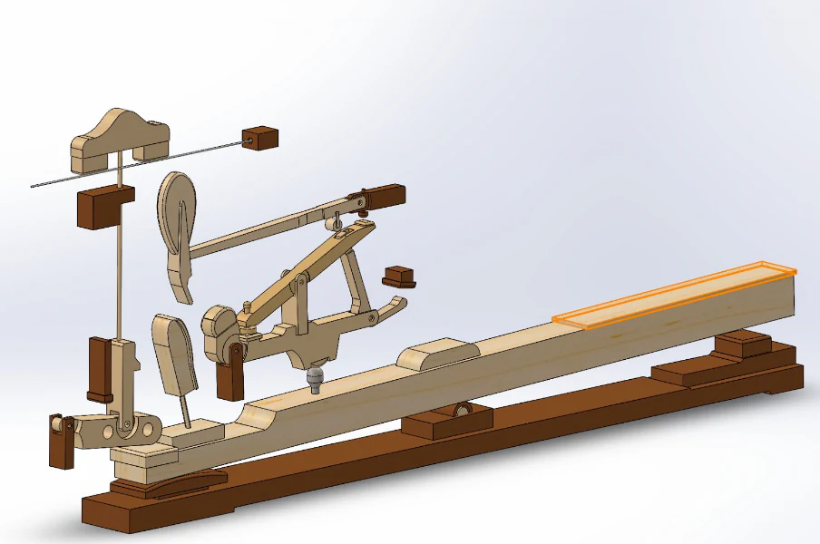

ピアノ・アクションの運動解析
2020年1月
概要
グランドピアノの内部では、鍵盤を押す動きが複数のリンク機構を介して伝わり、ハンマーを跳ね上げて弦を打つ。この、鍵盤が押された時にフェルトのハンマーを動かして弦を打てるようにしているテコのシステムを「ピアノ・アクション」と呼ぶ。このプロジェクトでは、複雑なピアノ・アクションをSolidWorks上に3Dモデルとして再構成し、鍵盤への入力がハンマーの速度と弦の反力へどのように変換されるかをモーション解析した。
断面資料をもとに部品を一からモデリングし、組み上げた機構について二つの関係を調べた。一つは鍵盤とハンマーの線速度、もう一つは鍵盤に加える力と弦側の反力である。シミュレーションの値を、部品の寸法と支点位置から導いた理論値と照合し、モデルの中で運動と力がどのように伝達されるかを確かめた。


ピアノ・アクションを、解析できる3Dモデルへ
一打鍵を、打弦へ変える機構
ピアノ・アクションは、鍵盤の下向きの動きをハンマーの上向きの運動へ変える機構である。鍵盤を押すと、キャプスタン、ウィペン、ジャック、レペティションレバーなどが連動し、ハンマーが持ち上がって弦を打つ。演奏者から見える動作は一つの打鍵だが、その内側では複数の部品が異なる支点のまわりを回転し、互いに接触しながら動きを受け渡している。
モデルには、鍵盤、ハンマー、ジャック、ウィペン、レペティションレバー、キャプスタン、ダンパー、ダンパーレバー、ワイヤーと、それらを支えるフレームを含めた。運動を理解するには、完成形を眺めるだけでなく、どの部品がどこを支点に動き、次の部品のどこへ触れるかを定義する必要がある。

断面図から3Dモデルをつくる
既製のCADデータを使うのではなく、ピアノ・アクションの断面資料を下絵にして各部品の輪郭をトレースし、一点ずつ3Dモデルを作成した。次に部品をアセンブリとして組み、実際の機構に対応する固定関係と回転関係を設定した。この工程によって、形を見るためのモデルを、力を加えて動かせる解析モデルへ変えた。
拘束条件を、自由度として確認する
固定したフレームを除く可動部品は9点で、拘束がなければ合計54自由度を持つ。キャプスタンとワイヤーを別の部品へ固定すると12自由度が減り、残る7部品を回転ジョイントで拘束すると、さらに35自由度が減る。したがって、このCADアセンブリの自由度は次のように7となる。
54 − 12 − 35 = 7
SolidWorksの拘束診断でも、推定自由度と実自由度はいずれも7、冗長拘束は0と表示された。これは実物のピアノ・アクション全般の自由度を断定する値ではなく、このプロジェクトで設定した部品構成と拘束条件が意図どおり組まれていることの確認である。

二つの解析——鍵盤入力がどう変換されるか
モデルの挙動は、二つの解析に分けて調べた。解析1は「鍵盤の動く速さが、ハンマーの速さへどう変換されるか」、解析2は「鍵盤へ加えた力が、弦側の反力としてどう現れるか」である。入力と出力を一組ずつ切り出すことで、複雑なリンク機構の挙動を、幾何学的な速度比と、てこの力のつり合いから説明できる形にした。
比較の基準には、機構を単純な回転要素へ置き換えた理論計算を用いた。理論値とシミュレーション値が近ければ、少なくともモデル内部の運動が、設定した寸法と拘束から期待される関係に沿っていると判断できる。
解析1——鍵盤の速度は、ハンマーでどれだけ増幅されるか
速度の解析では、ピアノ・アクションを、三つの回転要素が接触しながら動きを伝える機構へ簡略化した。同じ剛体上では角速度が共通であり、支点からの距離をr、その点の線速度をvとすると、v = ωrとなる。接触点で速度が損失なく次の要素へ伝わると仮定すれば、各段の入力半径と出力半径の比を掛け合わせて、ハンマー速度を求められる。
vhammer = (r1′ r2′ r3′ / r1 r2 r3) vkey

入力条件と観測結果
SolidWorks Motion Analysisで鍵盤端へ下向きに5 Nを加え、鍵盤端とハンマーの線速度を観測した。力を加え始めた直後のピーク速度は、鍵盤が1,027 mm/s、ハンマーが4,284 mm/sだった。シミュレーション上では、ハンマーが鍵盤の約4.17倍の速さで動いたことになる。
| 観測・計算対象 | 速度 |
|---|---|
| 鍵盤（シミュレーション） | 1,027 mm/s |
| ハンマー（理論計算） | 4,614 mm/s |
| ハンマー（シミュレーション） | 4,284 mm/s |
理論値との比較
モデルから測った半径は、r1 = 200 mm、r1′ = 88 mm、r2 = 53 mm、r2′ = 78 mm、r3 = 16 mm、r3′ = 111 mmである。これらを式へ代入すると、理想化した速度比は約4.49倍となり、鍵盤速度1,027 mm/sに対するハンマー速度は4,614 mm/sと予測される。
シミュレーション値4,284 mm/sは、理論値より約7%低かった。資料では、この差を、理論計算が無視した摩擦や変形などのエネルギー損失をSolidWorks側が扱うためと説明している。完全な一致ではないが、速度が増幅される大きさは両者で近く、モデルが想定した運動伝達を再現していると評価した。

解析2——鍵盤の力は、弦側でどのように現れるか
二つ目の解析では、鍵盤表面へ下向きに15 Nを加え、打弦時に弦側へ現れる反力を観測した。シミュレーションで得られた最大反力は31 Nだった。この値は、鍵盤側とハンマー側の腕の長さを使った、てこのつり合いから説明できる。
Vstring = (15 × 195) / 94 = 31.1 N
入力点から支点までの距離を195 mm、弦側の作用点までを94 mmとして計算すると、理論値は31.1 Nになる。シミュレーションの最大値31 Nとの差は0.1 Nであり、この解析でも、設定した寸法から期待される力の伝達とほぼ一致した。

結果と限界
一致したこと、まだ確かめていないこと
二つの解析で確認したのは、構築したCADモデルの出力が、同じモデルの寸法から導いた単純な力学計算と近いことである。速度の解析では鍵盤の約4.17倍のハンマー速度、力の解析では15 Nの入力に対して約31 Nの弦反力が得られた。複数の部品が連動する挙動を、支点と接触点の関係へ分解して説明できた。
一方、この資料には、摩擦係数、材料特性、接触条件、解析の時間刻みなど、物理精度を評価するための設定が記録されていない。また、実物のピアノで速度や打弦力を測った比較実験も示されていない。したがって、この資料から読み取れる範囲では、結果は実機の忠実な再現を実証するものではなく、3Dモデルと理論モデルの内部整合性を確かめたものとして捉えるのが適切である。
まとめ
断面図から構築した3Dモデルを動かすことで、ピアノ・アクションが鍵盤のゆっくりした動きをハンマーの速い運動へ変え、入力した力を弦へ伝える過程を定量的に捉えた。さらに、シミュレーション結果を簡略化した理論式と照合し、複雑なモデルを結果だけで終わらせず、その挙動を部品の寸法と支点の配置から説明した。
このプロジェクトで扱ったのは、完成した形状の再現だけではない。断面資料から構造を読み取り、動きに必要な関係をCAD上の拘束へ置き換え、解析する問いに合わせて単純な力学モデルへ分解するまでを、一つのモデリングの過程として行った。